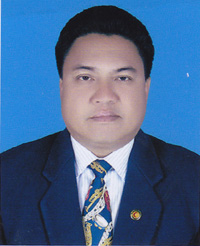

জনাব কংজরী চৌধুরী
চেয়ারম্যান
মোবাইল : ০১৮১৯৩০৯৫৬৯
ইমেইল: khdcbd@gmail.com
মো. হাবিবুর রহমান।
প্রধান নির্বাহী কর্মকর্তা
মোবাইল : ০১৫৫২৩২৬৮৬৬
জনাব মোঃ আবদুর রহমান তরফদার
নির্বাহী কর্মকর্তা
মোবাইল : ০১৭১১১৫১৯২৫
জনাব জীবন রোয়াজা
নির্বাহী প্রকৌশলী
মোবাইল : ০১৫৫০৬০৫৪৫৩
| নাম | অবস্থানকাল | মন্তব্য |
| জনাব সমীরণ দেওয়ান | (১০/৭/১৯৮৯ হতে ০৪/০৭/১৯৯৭) | নির্বাচিত |
| জনাব সমীরণ দেওয়ান | (০৫/০৭/১৯৯৭ হতে ১৪/১০/১৯৯৮) | মনোনীত |
| জনাব যতীন্দ্র লাল ত্রি্পুরা | (১৫/১০/১৯৯৮ হতে ১৩/০২/২০০২) | মনোনীত |
| জনাব নক্ষত্র লাল দেব বর্মণ | (১৪/০২/২০০২ হতে ২৮/০৩/২০০৬) | মনোনীত |
| জনাব মণিন্দ্র লাল ত্রিপুরা | (২৯/০৩/২০০৬ হতে ৩১/১০/২০০৮) | মনোনীত |
| জনাব রূইথি কার্বারী | (৩১/১০/২০০৮ হতে ২০/০৪/২০১০) | মনোনীত |
| জনাব কুজেন্দ্র লাল ত্রিপুরা | (২১/০৪/২০১০ হতে ০১/১২/২০১৩) | মনোনীত |
| জনাব চাইথো অ্ং মারমা | (০২/১২/২০১৩ হতে ২৮/০৩/২০১৫) | মনোনীত |
১। ২৫/১২/১৯৯৮ হতে পার্বত্য জেলা পরিষদ হিসাবে নামকরণ করা হয়।
২। জনাব মনীন্দ্র লাল ত্রিপুরা গত ৩১/১০/২০০৮ তারিখে মামলা জনিত কারনে গ্রেফতার হ্ওয়ায় সাময়িক বরখাস্ত হয় এবং মামলায় বেকসুর খালাস পাওয়ার পর পদত্যাগ করলে গত ১৭/৭/২০১০ তারিখে বরখাস্ত আদেশ প্রত্যাহার করার পর পদত্যাগপত্র গৃহীত হয়।
৩। পার্বত্য জেলা পরিষদ আইনের ১৪ ধারা অনুযায়ী চেয়ারম্যান পদ শুন্য থাকলে পরিষদের উপজাতীয় সদস্যগণের মধ্য হতে একজন অস্থায়ী চেয়ারম্যান হিসাবে দায়িত্ব পালন করেন।